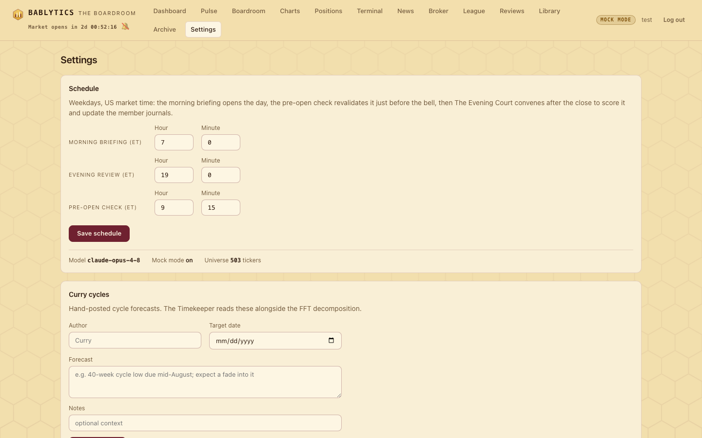
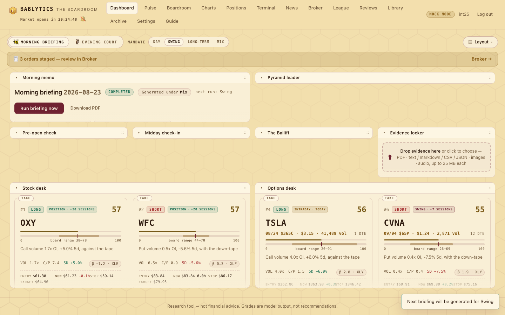

Desk · every switch, honestly
Settings
Every setting Bablytics has and where it actually lives: the Settings page (schedule, the trading mandate — day trade, swing, long-term or mix — and Curry cycles), the mailing list's SMTP and Firebase fields — whose two passwords live only in .env — the settings that sit on other pages, the database keys with no form, the environment file that holds the API key, and the preferences your browser keeps.
Bablytics keeps its settings in four places, and the Settings page is only one of them. This page lists all four so you can find any switch: the Settings page itself (the schedule, the mandate that tells the board what kind of trading to generate leads for, Curry cycles, and since round 26 the mailing list's SMTP and Firebase fields); settings that live on the page they affect (Pulse goals, Schwab keys, the theme toggle, the bell, the voice); keys in the database settings table that have no form yet; and the environment file, which is where the API key goes. Nothing in any of them places an order or changes what the app is allowed to do with money — there is no such setting.

The Settings page#
Schedule#
Three of the weekday jobs are editable here, in US Eastern time (hour 0–23, minute 0–59): the Morning briefing (default 7:00), the Evening review — the Evening Court — (default 19:00), and the Pre-open check (default 9:15). Save schedule posts to POST /api/settings, which stores run_hour/run_minute, review_hour/review_minute and preopen_hour/preopen_minute and calls the scheduler's reschedule() immediately — no restart. The outcomes job (16:45) and every other time on the daily rhythm are fixed in code or database-only (below).
Under the form, three read-only facts: the Model name the board would use (BABLYTICS_MODEL), whether Mock mode is on, and the Universe size — 503 tickers, the S&P 500 snapshot baked into bablytics/universe.py, overridable by data/universe.json (regenerate with python -m bablytics.universe refresh).
The mandate: what kind of trading the board generates#
Since round 25 the Settings page carries the same four-way segmented control the dashboard header shows — MANDATE Day · Swing · Long-term · Mix (the Day button is short for Day trade; every option's tooltip carries its hold) — with one line under it: the next briefing will be generated for this style. It is the setting trading_style in the settings table (default mix), and it changes what the morning board is asked to produce: how every candidate is graded for fit, which option expiries may be picked, and how the ten-plus-ten book is filled. The mechanism, step by step, is on the Morning Briefing page; the dashboard knob and the off-mandate chip are on the Dashboard page.

| Value | Label | Expected hold | Horizon classes the book may hold | Option DTE window |
|---|---|---|---|---|
intraday | Day trade | same session | intraday | 0–5 days |
swing | Swing | 2–10 sessions | swing (intraday tolerated) | 6–30 days |
long_term | Long-term | weeks to months | position, long_term | 45–180 days |
mix (default) | Mix | any | all four — and the book is spread: at least 3 intraday, 8 swing, 4 position / long-term when the candidates allow | per lead, from its own class: intraday 0–5, swing 6–30, position / long-term 45–180 |
The table is config.STYLES — one entry per value with label, hold, horizon_classes and dte — and config.style_label(value) gives the label. The pipeline reads the key with db.get_setting("trading_style") at run time, never at import, so a change made at 6:59 shapes the 7:00 run; every run also stores the mandate it was generated under in its own context (mandate: style, label, hold, and after selection the book_split — how many leads of each class the book ended with), which is how the dashboard can say "Generated under Swing" on an old run after you have moved the knob to Mix. The manual live-session briefing reads the same key and states it in the memo's first line (BRIEFING-SPEC.md § Mandate).
- GET /api/settings
- Now also returns
trading_styleandtrading_style_labelbeside the hour and minute fields. - POST /api/settings
- Accepts an optional
trading_style(one of the four values; anything else is rejected) together with the schedule fields, which keep working unchanged. - PUT / POST /api/settings/mandate
- Body
{"trading_style": "swing"}— the tiny endpoint the dashboard knob calls on every click, same validation. The toast "Next briefing will be generated for Swing" is the confirmation; nothing re-runs on its own.
What the mandate is not: it is not a filter on the universe — the scan still ranks the same 503 names by the same score under every mandate (no style hint; the mandate acts at grading and selection); it does not re-grade a briefing that already ran; and it moves nothing anywhere — it is an instruction to a research committee about the kind of book to write, and the committee is graded on whether it obeyed.
Curry cycles#
Hand-posted market-cycle forecasts from an outside analyst you follow. Fields: Author, Target date, Forecast (required) and Notes; the list below shows each one with a delete button. The five most recent are handed to the Timekeeper every morning alongside the FFT decomposition, and the persona is told to weigh them against their track record. API: GET/POST /api/curry, DELETE /api/curry/{id}.
The mailing list: SMTP and Firebase#
Since round 26 the Settings page carries the connection details for the Mailing list tab — one panel, Mailing list — SMTP & Firebase, with an SMTP block and a Firebase block, a Save mailing-list settings button, and two pills that only say whether SMTP_PASSWORD and FIREBASE_OWNER_PASSWORD are set in .env — saved together through PUT /api/maillist/settings, read back by GET /api/maillist/settings. Nine keys, all in the settings table; the eight connection keys also take an .env default of the same name in capitals (SMTP_HOST, FIREBASE_PROJECT_ID …) that the saved value wins over — the same pattern as the Schwab keys:
| Key | Default | What it does |
|---|---|---|
smtp_host | — | Your mail provider's SMTP server, e.g. smtp.gmail.com. Empty means SMTP not configured: dry runs still render, a real send answers 409. |
smtp_port | 587 | 587 with STARTTLS is the usual; 465 with TLS on uses implicit TLS (SMTP_SSL). |
smtp_user | — | The login name; empty means no login step (a local relay). |
smtp_from | — | The address every email is sent from — and to: recipients ride in Bcc, so this is the only address on the visible headers. Replies (and STOPs) land here. |
smtp_tls | on | STARTTLS (or implicit TLS on 465). Off only for a local test sink. |
firebase_project_id · firebase_api_key · firebase_owner_email | — | The project created by site/firebase/README.md, its public web API key (the same one the sign-up page ships — it is not a secret; the rules are) and the email of the one Firebase Auth user the rules allow to read. All three plus the password below make Sync work; anything missing and Sync names it. |
mail_unsubscribe_url | https://bablytics.com/unsubscribe.html | Quoted in every email's footer and List-Unsubscribe header. Change it only if the site moves. |
What the forms will not take: the two passwords. SMTP_PASSWORD (a Gmail app password, or whatever your provider issues) and FIREBASE_OWNER_PASSWORD (the owner account's Firebase Auth password, used for nothing else) are read from the environment at the moment a send or a sync happens — the environment file, below — and are never written to the database; PUT /api/maillist/settings refuses any key with password or secret in its name, and GET reports only smtp_password_set / firebase_password_set — true or false, never the value. The page says so next to the fields. Because they are environment, a password added or changed in .env needs an app restart, like the API key.
Two things are not settings at all and are worth saying: the batch size (fifty BCC recipients per message) is a constant, and there is no "send automatically" switch — see the Mailing list page for why there never will be.
The page closes with the disclaimer panel — the same research-tool statement the footer carries everywhere.
Settings that live on other pages#
| Setting | Where you change it | Stored as | What it does |
|---|---|---|---|
| Pulse goals: risk & size | Pulse tab, two segmented controls | pulse_risk (conservative / moderate / aggressive, default moderate), pulse_size (small / medium / large, default medium) — settings table | Shapes the Pulse's opinions and the ATR exit-zone brackets (1.0/1.5, 1.5/2.5, 2.0/4.0 ATR) used on the dashboard levels strip. Saving re-fetches the latest cycle. |
| The mandate (trading style) | Dashboard header knob — and this page | trading_style (intraday / swing / long_term / mix, default mix) — settings table | Tells the morning board what kind of trading to generate leads for: grading for fit, the option DTE window, the 10+10 split (mix spreads the book). Saves immediately; takes effect on the next run. |
| Mailing list: SMTP & Firebase | This page; the list itself is the Mailing list tab | smtp_host, smtp_port, smtp_user, smtp_from, smtp_tls, firebase_project_id, firebase_api_key, firebase_owner_email, mail_unsubscribe_url — settings table; the passwords .env only | Where a confirmed send goes out through, and which Firebase project Sync reads. No value here sends anything by itself. |
| Schwab app key & secret | Broker page, connection card | schwab_app_key, schwab_app_secret — settings table, masked on display | Signs the OAuth flow. Env SCHWAB_* values are the fallback. |
| Day / night theme | Dashboard, the Morning briefing | Evening court toggle | bablytics_theme_mode — browser localStorage | Morning = day (hive), Evening = night (owls). The only theme control. |
| Market bell | Header toggle 🔔 | bablytics_bell — localStorage | Rings at 9:30 and 16:00 ET on weekdays. Off until you turn it on. |
| Reading voice & rate | Listen control on the memo | bablytics_speech_voice, bablytics_speech_rate — localStorage | Which system voice reads the memo and how fast (0.7–1.3×, default 0.95×). |
| Dashboard layout | Layout menu, drag and keyboard | bablytics.dash.layout.v1 — localStorage | Panel order, spans, collapsed/hidden flags and fit/flow mode. |
| Chart templates | Charts Pro, Save… | bablytics_chart_templates — localStorage | Saved chart layouts: style, log scale, study instances. |
| Holdings | Positions upload / Clear | positions table | What the holdings table and the Pulse user book see. |
Browser-side preferences are per browser profile — they do not follow you to another machine and they are not in the database; clearing site data resets them.
Keys in the settings table with no form#
The server reads these from the settings table in bablytics.db, each with a default from bablytics/config.py. At round 22 none of them has a UI; change them with a SQLite client (for example sqlite3 data/bablytics.db "INSERT OR REPLACE INTO settings(key,value) VALUES('bailiff_dry_run','0')", adjusting the path to your data directory). Times are re-read whenever the scheduler re-covers — at startup, and whenever you press Save schedule — so a time edited by hand takes effect on the next save or restart. Flags marked "read at job time" take effect at the next run.
| Key | Default | What it does |
|---|---|---|
midday_hour / midday_minute | 12 / 30 | The Midday Check-In time (weekdays). |
week_review_hour / _minute | 8 / 0 | Saturday week-in-review. |
week_prospectus_hour / _minute | 17 / 0 | Sunday week-ahead prospectus. |
period_backward_hour / _minute | 18 / 0 | Daily guard that fires the month/year review on the period's last day. |
period_forward_hour / _minute | 7 / 30 | Daily guard that fires the month/year prospectus on the first day. |
rl_weekly_hour / _minute | 15 / 0 | Sunday deep generation of the Pulse population — the nightly cycle with a larger training budget (gated by rl_evolve_enabled). |
bailiff_sweep_hour / _minute | 16 / 5 | The Bailiff's close-basis sweep. |
bailiff_ratchet_hour / _minute | 14 / 35 | The crude ratchet check — reports BANK-HALF, executes nothing. |
pulse_enabled | "1" | Read at job time: "1" runs the half-hourly Pulse during 9:30–16:00 ET; anything else skips quietly. The Run-now button on the Pulse tab is unaffected. |
rl_evolve_enabled | "1" | Gates the nightly generation inside the Evening Court and the Sunday deep generation. Off → the court reports "training did not run: rl_evolve_enabled is off". See Learning loops. |
bailiff_enabled | "1" | Whether the scheduled Bailiff jobs run at all. |
bailiff_dry_run | "1" | Scheduled passes are dry by default: they evaluate and report but change nothing in the record. Set to "0" to let scheduled passes enforce in the record (the board's own book and the Paper League — never a broker). A manual POST /api/bailiff/evaluate also defaults to dry and must say "dry_run": false explicitly. See The Bailiff. |
broker_sizing_equity / order_size_pct | 25000 / 5 | How the bot sizes the stock tickets it stages; settable through POST /api/broker/settings. See Broker. |
schwab_callback_url / schwab_account_hash | env / first account | OAuth callback override; which account to submit to when Schwab returns several. |
paper_start_equity | 100000 | Starting equity of each Paper League book. |
pyramid_standings | — | Internal: the Pyramid's standings JSON, written by the court. Not a switch. |
The environment file#
The API key is not a setting in the app. It is read once, at import time, from the environment — and the app loads a .env file into the environment first. In a source checkout that file is .env at the repo root (copy .env.example); in the desktop app it is .env inside your data directory (see Download & install). A key added or changed there needs an app restart. Existing environment variables are never overridden by the file.
- ANTHROPIC_API_KEY
- The Anthropic key the board uses for real grading. Empty → mock mode auto-enables and the header shows the mock mode pill.
- BABLYTICS_MODEL
- Model for every board member. Default
claude-opus-4-8. - BABLYTICS_MOCK
1forces mock mode even with a key.- BABLYTICS_HOST · BABLYTICS_PORT
- Bind address and port; defaults
127.0.0.1and8420. The desktop app picks a free port if that one is busy. - BABLYTICS_DATA_DIR
- Overrides where the database, caches, model files, tokens and logs live (otherwise
data/in a checkout, or the per-OS app-data folder when packaged). - QUIVER_API_KEY
- Quiver Quantitative key for live congressional-trade data; without it the Watchdog degrades to "no signal".
- SCHWAB_APP_KEY · SCHWAB_APP_SECRET · SCHWAB_CALLBACK_URL
- Broker credentials, used only when the settings-table values are empty. Callback default
https://127.0.0.1:8421/schwab/callback. - SMTP_PASSWORD
- The mailing list's SMTP login password — a Gmail app password when
smtp_hostissmtp.gmail.com. Environment only: there is no field for it, the settings API refuses it, and it is read at the moment of a confirmed send (above). - FIREBASE_OWNER_PASSWORD
- The Firebase Auth password of the owner account that may read the list — used only to sign in for Sync. Environment only, same rules. Pick a password used for nothing else.
- SMTP_HOST · SMTP_PORT · SMTP_USER · SMTP_FROM · SMTP_TLS · FIREBASE_PROJECT_ID · FIREBASE_API_KEY · FIREBASE_OWNER_EMAIL
- Optional defaults for the nine mailing-list settings; a value saved on the Settings page wins.
Legacy STONKS_MODEL, STONKS_MOCK, STONKS_HOST and STONKS_PORT spellings still work as fallbacks. The full list with examples is on Run from source.
.env, where the app reads them and never copies them. The Broker page's Submit button is the only real-money action in the product, and the Mailing list's confirmed Send is the only way a report leaves the machine; both are clicks, not settings — see Broker and The Mailing List.